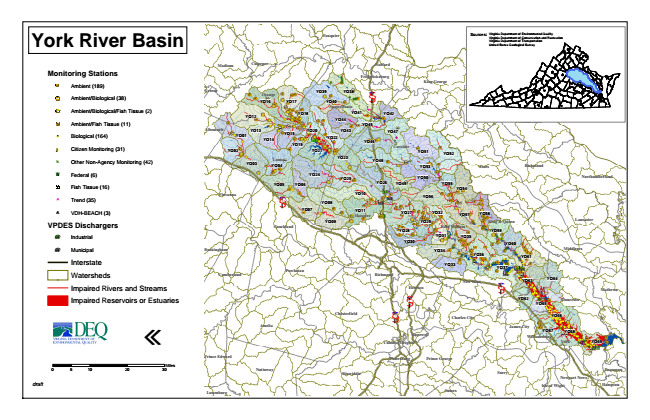

York River Basin
Monitoring Stations
Ambient (189)
Ambient/Biological (38)
Ambient/Biological/Fish Tissue (2)
Ambient/Fish Tissue (11)
#* Biological (164)
kj Citizen Monitoring (31)
k Other Non-Agency Monitoring (42)
XW Federal (6)
Fish Tissue (16)
^ Trend (35)
!A VDH-BEACH (3)
VPDES Dischargers
A@ Industrial
A@ Municipal
Interstate
Watersheds
Impaired Rivers and Streams
Impaired Reservoirs or Estuaries
«
0 5
10 20 30 Sources: Virginia Virginia Department Department of of Environmental Conservation and Quality Recreation Virginia Department of Transportation United States Geological Survey
draft
Miles
Fauquier
Madison
Culpeper
Stafford
Fredericksburg
King George
Greene
Orange
YO16
YO17
YO39
YO38 YO40
§ ̈¦ 95
Spotsylvania
YO12
YO18
YO44
YO41
YO42
YO45
Westmoreland
Albemarle
YO01
YO13 YO14
YO15
YO19
YO20
YO22
YO43
YO46
YO47
Caroline YO02
YO21
YO51
YO52
YO03
Louisa YO04
YO23
YO48
YO53
Essex
Richmond
YO05
YO24
YO25
YO26
YO49
YO50
Northumberland
YO06
YO55
YO54 Fluvanna
§ ̈¦ 64
YO10
YO56 YO08
YO07
YO11 Hanover
YO27
YO32
YO57
YO58
YO09
YO29
King & Queen
Lancaster Goochland
YO28
King William
YO59 YO31
YO35 YO30
YO60 Buckingham
YO34
Middlesex YO36
YO61
Cumberland
Powhatan
Richmond
YO33
YO37
Henrico
§ ̈¦ 64
YO63
YO64
Mathews
YO62
YO65
Gloucester
Chesterfield
§ ̈¦ 95
YO66
Amelia
James City
YO67
YO68 Williamsburg Colonial Heights
York
YO69
Prince George
Dinwiddie
Surry
Newport News
Isle of Wight
Hampton Sussex
New Kent
§ ̈¦ 295
Charles City
Hopewell
Prince Edward
Petersburg
Lunenburg
Nottoway
Poquoson